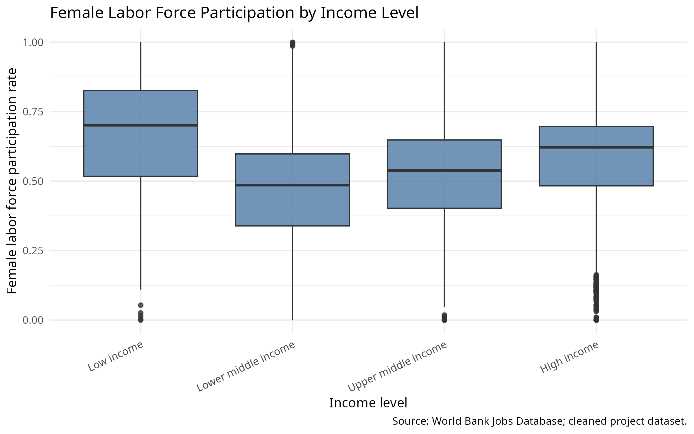
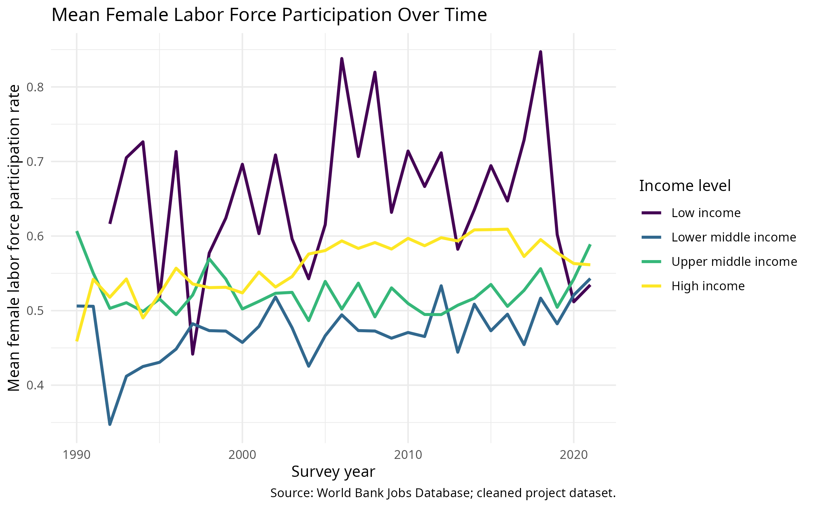
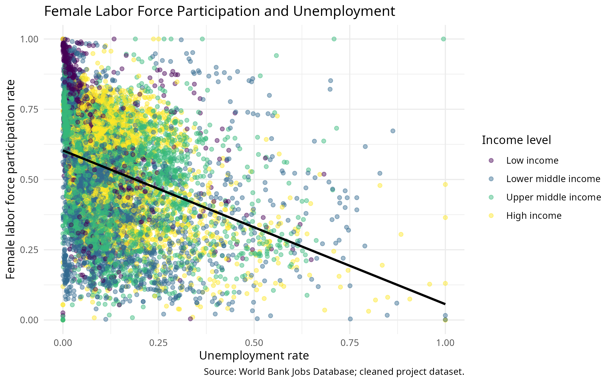

Code
library(tidyverse)
library(here)
library(gt)
library(broom)title: “Female Labor Force Participation Across Countries” subtitle: “Trends, Inequality, and Labour Market Context” author: - “Krenar Hoxha” - “Daniel Kling” date: “2026-06-28” format: html: toc: true toc-depth: 3 code-fold: true —
jobs <- read_csv(here("data", "processed", "jobs_clean.csv"))
flfp_by_year_income <- read_csv(here("data", "processed", "analysis_flfp_by_year_income.csv"))
flfp_by_income_subsample <- read_csv(here("data", "processed", "analysis_flfp_by_income_subsample.csv"))
model_data <- read_csv(here("data", "processed", "analysis_model_data.csv"))
flfp_correlations <- read_csv(here("data", "processed", "analysis_flfp_correlations.csv"))
model_coefficients <- read_csv(here("data", "processed", "analysis_flfp_model_coefficients.csv"))
model_glance <- read_csv(here("data", "processed", "analysis_flfp_model_glance.csv"))Female labor force participation is an important labour market indicator and a useful measure for studying gender inequality across countries. Differences in participation can reflect economic opportunities, household constraints, sectoral employment patterns, and broader institutional contexts.
This project is exploratory. It describes patterns and associations in the World Bank Jobs Indicators data, but it does not attempt to make causal claims about why female labor force participation differs across countries or groups.
The project uses the World Bank Global Jobs Indicators Database, which contains labour market indicators by country, income group, survey year, and population subsample. The cleaned dataset is stored as data/processed/jobs_clean.csv.
The main outcome is female labor force participation among people aged 15-64 (flfp). The analysis also uses income level, subsample, survey year, unemployment, female non-agricultural employment, and average weekly working hours.
data_overview <- tibble(
metric = c(
"Rows",
"Countries",
"Year range",
"Income groups",
"Subsamples"
),
value = c(
nrow(jobs),
n_distinct(jobs$country),
paste(min(jobs$year, na.rm = TRUE), max(jobs$year, na.rm = TRUE), sep = "-"),
n_distinct(jobs$income_level),
n_distinct(jobs$subsample)
)
)
data_overview |>
gt() |>
cols_label(
metric = "Dataset feature",
value = "Value"
)| Dataset feature | Value |
|---|---|
| Rows | 12357 |
| Countries | 167 |
| Year range | 1990-2021 |
| Income groups | 4 |
| Subsamples | 8 |
How does female labor force participation vary across income groups, urban/rural populations, and survey years?
How is female labor force participation associated with unemployment, female non-agricultural employment, and average weekly working hours?

The boxplot shows that female labor force participation differs across income groups, while also varying substantially within each group. This supports the first research question by showing that income level is a useful grouping variable. The spread suggests that later interpretation should avoid treating income groups as internally uniform.

The time-series figure shows mean female labor force participation by survey year and income group. The plot suggests broad differences between income groups and visible changes over time, but survey coverage differs by year. These patterns motivate grouped summaries by year and income group rather than a single overall trend.

The scatterplot shows an exploratory association between female labor force participation and unemployment. The fitted line suggests a negative association in the available data, although this cannot be interpreted causally. This motivates the second research question and the use of correlations and an exploratory regression model.
For the first research question, the analysis uses grouped summaries of female labor force participation by year, income group, and subsample. These summaries describe how participation differs across income groups, urban/rural populations, and survey years.
For the second research question, the analysis uses Pearson correlations and an exploratory linear model:
flfp ~ unemployment + female_non_agri + avg_weekly_hours + income_level + subsample
The model describes associations only. Its coefficients should not be interpreted as causal effects, because the data do not include all relevant social, cultural, institutional, and policy factors.
| Income group | Subsample | N | Mean FLFP | Median FLFP | SD FLFP |
|---|---|---|---|---|---|
| High income | All | 619 | 0.626 | 0.645 | 0.094 |
| High income | Female | 557 | 0.627 | 0.646 | 0.095 |
| High income | High Education | 500 | 0.663 | 0.669 | 0.082 |
| High income | Low Education | 517 | 0.411 | 0.425 | 0.188 |
| High income | Old | 557 | 0.684 | 0.702 | 0.107 |
| High income | Rural | 458 | 0.610 | 0.631 | 0.113 |
| High income | Urban | 481 | 0.639 | 0.663 | 0.092 |
| High income | Young | 557 | 0.356 | 0.330 | 0.111 |
| Low income | All | 140 | 0.675 | 0.733 | 0.206 |
| Low income | Female | 129 | 0.683 | 0.734 | 0.199 |
| Low income | High Education | 129 | 0.584 | 0.592 | 0.206 |
| Low income | Low Education | 129 | 0.701 | 0.762 | 0.220 |
| Low income | Old | 129 | 0.746 | 0.804 | 0.199 |
| Low income | Rural | 123 | 0.726 | 0.800 | 0.211 |
| Low income | Urban | 125 | 0.579 | 0.582 | 0.185 |
| Low income | Young | 129 | 0.570 | 0.580 | 0.212 |
| Lower middle income | All | 422 | 0.496 | 0.502 | 0.183 |
| Lower middle income | Female | 416 | 0.495 | 0.501 | 0.182 |
| Lower middle income | High Education | 408 | 0.515 | 0.533 | 0.171 |
| Lower middle income | Low Education | 410 | 0.433 | 0.438 | 0.215 |
| Lower middle income | Old | 416 | 0.555 | 0.567 | 0.200 |
| Lower middle income | Rural | 405 | 0.507 | 0.494 | 0.213 |
| Lower middle income | Urban | 408 | 0.474 | 0.516 | 0.181 |
| Lower middle income | Young | 416 | 0.339 | 0.329 | 0.155 |
| Upper middle income | All | 515 | 0.541 | 0.555 | 0.144 |
| Upper middle income | Female | 485 | 0.540 | 0.555 | 0.146 |
| Upper middle income | High Education | 476 | 0.606 | 0.617 | 0.137 |
| Upper middle income | Low Education | 479 | 0.420 | 0.406 | 0.190 |
| Upper middle income | Old | 485 | 0.597 | 0.616 | 0.160 |
| Upper middle income | Rural | 424 | 0.518 | 0.496 | 0.174 |
| Upper middle income | Urban | 428 | 0.570 | 0.592 | 0.137 |
| Upper middle income | Young | 485 | 0.366 | 0.342 | 0.138 |
The grouped results show that female labor force participation differs across income groups and subsamples. These differences are descriptive patterns, not explanations of the underlying causes. The table is useful for identifying where group comparisons should be emphasized in the final interpretation.
| Variable | Correlation with FLFP | Complete observations |
|---|---|---|
| unemployment | -0.335 | 9500 |
| female_non_agri | -0.041 | 9500 |
| avg_weekly_hours | -0.178 | 9500 |
The correlations summarize pairwise associations between female labor force participation and selected labour market indicators. In this dataset, unemployment and average weekly working hours are negatively associated with female labor force participation, while female non-agricultural employment has a weaker association. These are exploratory associations and should be interpreted cautiously.
| Term | Estimate | Std. error | Statistic | P-value |
|---|---|---|---|---|
| (Intercept) | 0.969 | 0.015 | 66.198 | 0.000 |
| unemployment | -0.375 | 0.017 | -22.618 | 0.000 |
| female_non_agri | -0.141 | 0.009 | -15.057 | 0.000 |
| avg_weekly_hours | -0.005 | 0.000 | -16.121 | 0.000 |
| income_levelLow income | -0.004 | 0.008 | -0.538 | 0.591 |
| income_levelLower middle income | -0.150 | 0.005 | -32.180 | 0.000 |
| income_levelUpper middle income | -0.064 | 0.004 | -15.563 | 0.000 |
| subsampleFemale | -0.012 | 0.006 | -2.085 | 0.037 |
| subsampleHigh Education | 0.049 | 0.006 | 8.358 | 0.000 |
| subsampleLow Education | -0.127 | 0.006 | -21.082 | 0.000 |
| subsampleOld | 0.051 | 0.006 | 8.898 | 0.000 |
| subsampleRural | -0.039 | 0.006 | -6.326 | 0.000 |
| subsampleUrban | 0.027 | 0.006 | 4.479 | 0.000 |
| subsampleYoung | -0.169 | 0.006 | -28.105 | 0.000 |
The model results describe conditional associations after accounting for the included labour market indicators, income group, and subsample. The coefficients are consistent with an exploratory relationship between female labor force participation and the selected labour market context variables. Because the model is not causal, the estimates should be read as descriptive patterns in the cleaned dataset.
The dataset does not include all relevant social, cultural, institutional, and policy factors that may shape female labor force participation. Important context such as childcare systems, legal institutions, social norms, education systems, and sectoral labour demand is not fully represented.
Survey coverage also differs across countries and years, which limits direct comparisons over time. The correlations and regression coefficients are exploratory associations, not causal effects.
The analysis suggests that female labor force participation varies across income groups, subsamples, and survey years. It is also associated with unemployment, female non-agricultural employment, and average weekly working hours in the available data.
The final project could be improved with richer contextual variables and more careful model diagnostics. These additions would support a more nuanced interpretation while still avoiding causal claims unless the research design supports them.
The project uses Quarto, Git, and renv to support reproducibility. The intended workflow is:
01_download.R -> 02_clean.R -> 03_eda.R -> 04_analysis.R -> quarto render